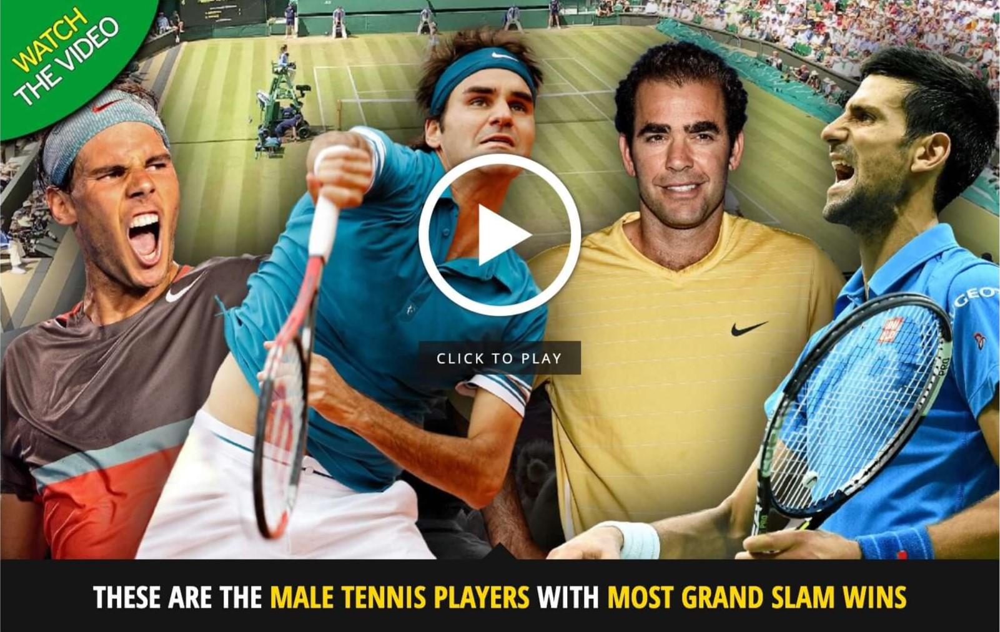

Roger Federer crashes out of Australian Open in four-set loss to Stefanos Tsitsipas
The Swiss champion bowed out following a stunning display from the 20-year-old

Roger Federer has bowed out of the Australian Open with a shock four-set loss to Stefanos Tsitsipas.
Federer's chances of winning a third consecutive Australian Open title were ended as the 20-year-old came of age on Rod Laver Arena.
The Greek, who was not born when Federer made his professional debut, has rapidly established himself as one of the most exciting up-and-coming talents in the game and backed it up spectacularly with a 6-7 (11) 7-6 (3) 7-5 7-6 (5) victory to move through to a first slam quarter-final.
Federer had not lost a match at Melbourne Park since a semi-final defeat by Novak Djokovic in 2016 but his often-brilliant forehand was wayward, especially at the big moments, and he failed to take four set points in the second set which might well have changed the outcome.
Federer lost in Melbourne for the first time since 2016
(image:AFP/Getty Images)
For the first time all evening, Tsitsipas looked overwhelmed as he stepped out for the on-court interview, saying: "I'm the happiest man on earth right now. I cannot describe it.
"From the very beginning it was very important to keep that mindset, to believe in yourself, believe in your capabilities.

Tsitsipas celebrated his stunning win
(Image: LYNN BO BO/EPA-EFE/REX/Shutterstock)
"Roger is a legend of the sport, so much respect for him. He showed such good tennis over the years. I've been idolising him since the age of six."
"It was a dream come true just being on Rod Laver facing him. Winning at the end, I cannot describe it."
"I had an aggressive mindset from the start, stayed in the moment, got first serves in and tried to press. I didn't lose my patience and that was the key."
"I showed fighting spirit and had most of the crowd supporting me. I haven't seen such a large crowd all my life. The atmosphere, the vibes and the energy shown to Roger and me today was indescribable."
read more
Sport top stories

England rugby star calls time on career

Woods given USA's top civilian honour